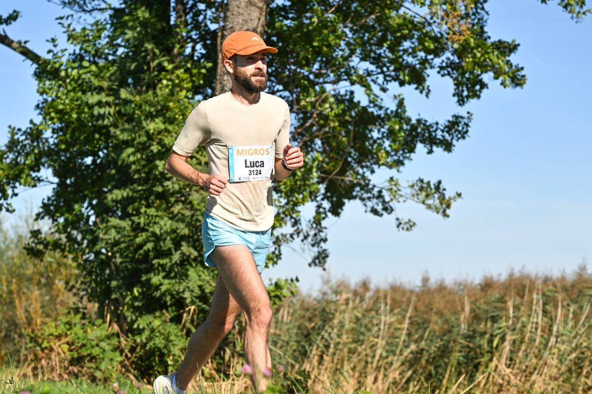

I'm a PhD student in mathematics, advised by Thomas Mettler. I started my PhD in September 2025, after a BSc and MSc in Mathematics at ETH Zürich.
My research is in differential geometry and geometric analysis, with a focus on projective structures on surfaces.
Interests: projective and conformal geometry · Riemann surfaces · geometric analysis · dynamical systems.
Theses
-
Regularity of Soap-Film-Like Minimal Surfaces
Summary
A study of regularity results for soap-film-like minimal surfaces, modelled as sets of finite perimeter in geometric measure theory. -
The Brownian Map
Summary
An introduction to the continuum random tree and the Brownian map, following the proof that the Brownian map is homeomorphic to the 2-sphere. -
Lagrange and Markov Spectra
Summary
An exposition of the Lagrange and Markov spectra from a dynamical point of view, including the result that both have the same Hausdorff dimension.
Service
- Oct 2026Co-organiser, Graduate Colloquium of the Swiss Doctoral Program (CUSO), UniDistance Suisse, 22–23 October 2026
- 2025–Representative of the mid-level academic staff, Faculty Council of Mathematics and Computer Science, UniDistance Suisse
Teaching
- Fall 2026Analysis I, UniDistance Suisse
- Spring 2026Linear Algebra II, UniDistance Suisse
- Fall 2025Analysis I, UniDistance Suisse
- 2024Probability and Statistics (Computer Science), ETH Zürich
- 2023–Applied Category Theory (Mechanical Engineering), ETH Zürich
- 2022, 2023Analysis II (Mathematics, Physics, Chemistry), ETH Zürich
- 2022Mathematics III: Partial Differential Equations (Chemistry), ETH Zürich
- 2021Analysis I (Mathematics, Physics, Chemistry), ETH Zürich
Education
- 2025–PhD in Mathematics, UniDistance Suisse
- 2023–2025MSc in Mathematics, ETH Zürich
- 2017–2023BSc in Mathematics, ETH Zürich
Mathematical toys
A uniformly random tree (root marked by a dot), grown from the random walk excursion drawn underneath: each step up adds a new edge, each step down walks back towards the root. As the number of vertices grows, suitably rescaled random trees converge to Aldous' continuum random tree, the starting point for the Brownian map.
Drag to move through the hyperbolic plane. Regular octagons with all angles equal to π/4 tile the Poincaré disk, eight meeting at every corner. Gluing opposite sides of the highlighted octagon (matching colours ) gives the Bolza surface, the most symmetric closed surface of genus 2.
Outside of mathematics
When I'm not doing mathematics, you'll most likely find me out running.
